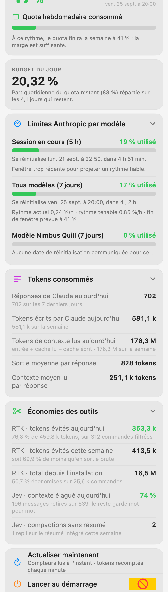

Anthropic tells you how much of the week is gone. ClaudeMenu tells you where it lands at the current pace, what today's fair share is, and exactly how many tokens you actually spent — counted from your own Claude Code transcripts. Anthropic vous dit quelle part de la semaine est consommée. ClaudeMenu vous dit où elle atterrit au rythme actuel, quelle est la part du jour, et combien de tokens vous avez réellement dépensés — comptés sur vos propres transcripts Claude Code. Anthropic 告訴你這週用掉了多少。ClaudeMenu 告訴你依目前節奏會落在哪裡、今天該用多少，以及你實際花了多少 token——直接從你自己的 Claude Code 記錄中計算。

What it showsCe qu'il montre顯示內容
The menu bar carries the weekly percentage. Open it and every number that matters is one scroll away. La barre de menus porte le pourcentage hebdomadaire. Ouvrez-le et tous les chiffres utiles tiennent en un défilement. 選單列顯示每週百分比。點開後，所有重要數字一捲即見。
Where the week lands if nothing changes, and the daily budget that keeps an even pace to the reset. A window that just opened says so instead of extrapolating: 12 % three minutes in is not a 254 %/h habit. Où la semaine atterrit si rien ne change, et le budget quotidien qui tient un rythme régulier jusqu'à la réinitialisation. Une fenêtre à peine ouverte le dit au lieu d'extrapoler : 12 % au bout de trois minutes n'est pas une habitude à 254 %/h. 若一切不變，本週將落在哪裡；以及維持穩定節奏所需的每日預算。剛開啟的視窗會直說，而不會外推：三分鐘內的 12 % 並不代表每小時 254 %。
The 5-hour session, the 7-day quota, and one row per model-specific weekly limit — each with its reset time, its current rate in %/h and the sustainable rate that would land exactly on the limit. La session de 5 h, le quota de 7 jours, et une ligne par limite hebdomadaire propre à un modèle — chacune avec son heure de réinitialisation, son rythme actuel en %/h et le rythme tenable qui atterrirait pile sur la limite. 5 小時工作階段、7 天配額，以及每個模型專屬的每週限制各一列——各自標示重置時間、目前每小時百分比，以及剛好落在上限的可持續速率。
Percentages hide what you actually spent. Replies, output tokens and context tokens read, for today and the week, with per-reply averages — counted from your transcripts, not estimated. Les pourcentages masquent la dépense réelle. Réponses, tokens écrits et tokens de contexte lus, pour aujourd'hui et la semaine, avec les moyennes par réponse — comptés sur vos transcripts, pas estimés. 百分比掩蓋了實際花費。今日與本週的回覆數、輸出 token 與讀取的脈絡 token，並附每則平均——直接計算自你的記錄，而非估算。
If RTK is installed, the tokens it avoided today, this week and since install. If fast-jev-compaction is installed, how much context each compaction pruned while keeping the rest verbatim. Nothing shows otherwise. Si RTK est installé, les tokens évités aujourd'hui, cette semaine et depuis l'installation. Si fast-jev-compaction est installé, le contexte élagué à chaque compaction, le reste étant gardé mot pour mot. Rien ne s'affiche sinon. 若已安裝 RTK，顯示今日、本週與自安裝以來省下的 token。若已安裝 fast-jev-compaction，顯示每次壓縮修剪掉多少脈絡，其餘逐字保留。未安裝則不顯示。
Where the data comes fromD'où viennent les données資料來源
Nothing is estimated or reconstructed. The percentages come from the endpoint Claude Code itself reads, so they match /usage exactly.
Rien n'est estimé ni reconstruit. Les pourcentages viennent de l'endpoint que Claude Code lit lui-même : ils correspondent exactement à /usage.
沒有任何估算或重建。百分比來自 Claude Code 自己讀取的端點，因此與 /usage 完全一致。
GET https://api.anthropic.com/api/oauth/usage Authorization: Bearer <token from the login keychain> anthropic-beta: oauth-2025-04-20
| ConcernQuestion項目 | How ClaudeMenu handles itComment ClaudeMenu la traiteClaudeMenu 的處理方式 |
|---|---|
| The tokenLe jeton權杖 | Read from the Claude Code-credentials keychain item through /usr/bin/security — the same tool that wrote it, so macOS raises no second prompt. Kept in memory for the request, never written anywhere, never refreshed (that would race Claude Code).
Lu dans l'entrée de trousseau Claude Code-credentials via /usr/bin/security — l'outil même qui l'a écrite, donc pas de seconde invite macOS. Gardé en mémoire le temps de la requête, jamais écrit nulle part, jamais renouvelé (cela entrerait en concurrence avec Claude Code).
透過 /usr/bin/security 從 Claude Code-credentials 鑰匙圈項目讀取——正是寫入它的同一個工具，因此 macOS 不會再次提示。僅在請求期間存於記憶體，不寫入任何位置，也不更新（以免與 Claude Code 衝突）。 |
| Rate limitsLimites d'appel速率限制 | The endpoint rate-limits hard, so the gauge is called at most every three minutes, with exponential backoff to fifteen minutes after a 429. The last good reading stays on screen. L'endpoint limite fortement les lectures : la jauge est appelée au plus toutes les trois minutes, avec un backoff exponentiel jusqu'à quinze minutes après un 429. Le dernier relevé valide reste affiché. 該端點限制嚴格，因此最多每三分鐘讀取一次，收到 429 後以指數退避至十五分鐘。畫面持續顯示最後一次有效讀數。 |
| Token countsComptage des tokensToken 計數 | Read incrementally from ~/.claude/projects/**/*.jsonl, from the byte offset reached last time. An assistant message spans several JSONL lines repeating the same usage object, so they are de-duplicated by message id.
Lus de façon incrémentale depuis ~/.claude/projects/**/*.jsonl, à partir de l'offset atteint la fois précédente. Un message assistant s'étale sur plusieurs lignes JSONL répétant le même objet d'usage : elles sont dédoublonnées par identifiant de message.
從 ~/.claude/projects/**/*.jsonl 依上次讀取的位移增量讀取。一則助理訊息會橫跨多行 JSONL 並重複相同的用量物件，因此依訊息 id 去除重複。 |
| PrivacyVie privée隱私 | Everything stays on your Mac. The only network call is the one above, to Anthropic, with your own token. No telemetry, no analytics, no third party. Transcripts are read, never sent. Tout reste sur votre Mac. Le seul appel réseau est celui ci-dessus, vers Anthropic, avec votre propre jeton. Aucune télémétrie, aucune analytique, aucun tiers. Les transcripts sont lus, jamais envoyés. 一切留在你的 Mac 上。唯一的網路請求就是上述這一個，送往 Anthropic，使用你自己的權杖。沒有遙測、沒有分析、沒有第三方。記錄只被讀取，絕不外傳。 |
InstallInstallation安裝
The v1.0.0 disk image is signed with a Developer ID and notarised by Apple, so it opens without a warning. From there the app updates itself. You can also build it in three commands. L'image disque v1.0.0 est signée avec un Developer ID et notarisée par Apple, donc elle s'ouvre sans avertissement. Ensuite l'app se met à jour toute seule. Vous pouvez aussi la compiler en trois commandes. 「v1.0.0 磁碟映像檔」已使用 Developer ID 簽署並通過 Apple 公證，開啟時不會出現警告。之後應用程式會自動更新。你也可以用三道指令自行建置。
brew install xcodegen git clone https://github.com/vincentlauriat/ClaudeMenu.git cd ClaudeMenu && xcodegen generate xcodebuild -project ClaudeMenu.xcodeproj -scheme ClaudeMenu \ -configuration Debug -derivedDataPath build \ CODE_SIGNING_ALLOWED=NO build open build/Build/Products/Debug/ClaudeMenu.app